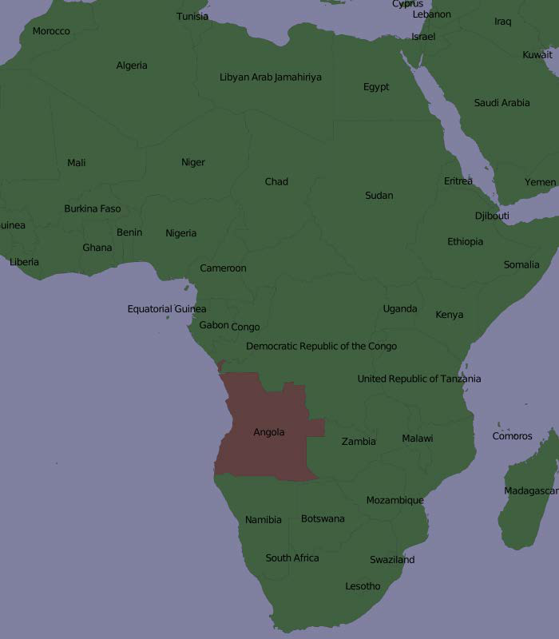

创建示例地图#
Creating an example map
为了更好地理解 Mapnik 各个部分是如何协同工作的，我们将编写一个简单的 Python 程序，生成本章开头显示的地图。这张地图使用了《世界边界数据集》，你应该在前一章中下载过它；将 TM_WORLD_BORDERS-0.3 shapefile 目录复制到一个方便的位置，并在同一个位置创建一个新的 Python 脚本。我们将这个程序命名为 createExampleMap.py。
备注
显然，如果你到现在还没有下载和安装 Mapnik，那么现在是时候做这件事了。Mapnik 可以在 http://mapnik.org 找到。
我们从导入 Mapnik 工具包并定义程序所需的一些常量开始：
import mapnik
MIN_LAT = -35
MAX_LAT = +35
MIN_LONG = -12
MAX_LONG = +50
MAP_WIDTH = 700
MAP_HEIGHT = 800
MIN_LAT、MAX_LAT、MIN_LONG 和 MAX_LONG 常量定义了要在地图上显示的世界区域的经纬度坐标，而 MAP_WIDTH 和 MAP_HEIGHT 常量定义了生成的地图图像的大小（以像素为单位）。显然，如果你希望改变这些值，可以自行调整。
现在我们准备定义地图的内容。这个地图将有两个图层，一个用于绘制多边形，另一个用于绘制标签。我们将为这两个图层分别定义一个 Mapnik 样式对象。我们从为“多边形”图层定义样式开始：
polygonStyle = mapnik.Style()
正如我们在上一节中讨论的那样，过滤器对象可以让你选择规则将应用于哪些特定的特征。在这种情况下，我们希望设置两个规则，一个用于将安哥拉绘制为深红色，另一个用于将所有其他国家绘制为深绿色：
rule = mapnik.Rule()
rule.filter = mapnik.Filter("[NAME] = 'Angola'")
symbol = mapnik.PolygonSymbolizer(mapnik.Color("#604040"))
rule.symbols.append(symbol)
polygonStyle.rules.append(rule)
rule = mapnik.Rule()
rule.filter = mapnik.Filter("[NAME] != 'Angola'")
symbol = mapnik.PolygonSymbolizer(mapnik.Color("#406040"))
rule.symbols.append(symbol)
polygonStyle.rules.append(rule)
请注意，我们如何创建一个 PolygonSymbolizer 来用适当的颜色填充国家多边形，然后将这个符号添加到当前的规则中。在定义规则时，我们将其添加到 polygonStyle 中。
现在我们已经填充了国家的多边形，我们将定义一个额外的规则来绘制多边形的轮廓：
rule = mapnik.Rule()
symbol = mapnik.LineSymbolizer(mapnik.Color("#000000"), 0.1)
rule.symbols.append(symbol)
polygonStyle.rules.append(rule)
这就是将国家多边形绘制到地图上的所有步骤。现在我们继续为“标签”图层定义第二个 Mapnik 样式对象：
labelStyle = mapnik.Style()
rule = mapnik.Rule()
symbol = mapnik.TextSymbolizer(mapnik.Expression("[NAME]"),
"DejaVu Sans Book", 12,
mapnik.Color("#000000"))
rule.symbols.append(symbol)
labelStyle.rules.append(rule)
这个样式使用 TextSymbolizer 将标签绘制到地图上。请注意，我们创建了一个 Expression 对象来定义要显示的文本——在这个例子中，我们使用 shapefile 中的 NAME 属性；该属性包含了国家的名称。
备注
在这个例子中，我们只为每个图层使用一个 Mapnik 样式。在生成更复杂的地图时，通常会有多个样式可以应用于每个图层，并且样式可以在图层之间共享。如果是这个例子，我们将地图定义保持得尽可能简单。
现在我们已经设置好了样式，可以开始定义地图的图层了。不过，在此之前，我们需要设置数据源：
datasource = mapnik.Shapefile(file="TM_WORLD_BORDERS-0.3/" +
"TM_WORLD_BORDERS-0.3.shp")
然后我们可以定义地图使用的两个图层：
polygonLayer = mapnik.Layer("Polygons")
polygonLayer.datasource = datasource
polygonLayer.styles.append("PolygonStyle")
labelLayer = mapnik.Layer("Labels")
labelLayer.datasource = datasource
labelLayer.styles.append("LabelStyle")
备注
请注意，我们通过名称来引用样式，而不是直接插入样式。这使我们可以重用样式，或者在 XML 定义文件中定义样式，然后在 Python 代码中引用它们。我们稍后将把样式定义添加到我们的地图中。
现在我们终于可以创建我们的 Map 对象了。一个 Mapnik Map 对象有大小和投影、背景颜色、样式列表和组成地图的图层列表：
map = mapnik.Map(MAP_WIDTH, MAP_HEIGHT,
"+proj=longlat +datum=WGS84")
map.background = mapnik.Color("#8080a0")
map.append_style("PolygonStyle", polygonStyle)
map.append_style("LabelStyle", labelStyle)
map.layers.append(polygonLayer)
map.layers.append(labelLayer)
最后，我们需要告诉 Mapnik 对目标区域进行缩放，然后将地图渲染到图像文件中：
map.zoom_to_box(mapnik.Box2d(MIN_LONG, MIN_LAT,
MAX_LONG, MAX_LAT))
mapnik.render_to_file(map, "map.png")
如果你运行这个程序并打开 map.png 文件，你将看到你生成的地图：
显然，你可以使用 Mapnik 做更多事情，但这个例子涵盖了主要内容，并应该足以让你开始生成自己的地图。确保你尝试这个例子，以熟悉 Mapnik 的工作方式。这里有一些你可能想尝试的事情：
调整程序开始时的 MIN_LAT、MIN_LONG、MAX_LAT 和 MAX_LONG 常量，以放大到你所在的国家
更改生成图像的大小
改变地图的颜色
添加额外的规则，以根据国家人口的不同显示不同的字体大小和颜色
提示
为此，你需要定义类似这样的过滤器:
mapnik.Filter("[POP2005] > 1000000 and [POP2005] <= 2000000")
To better understand how the various parts of Mapnik work together, let’s write a simple Python program, which generates the map shown at the start of this chapter. This map makes use of the World Borders Dataset, which you downloaded in an earlier chapter; copy the TM_WORLD_BORDERS-0.3 shapefile directory into a convenient place, and create a new Python script in the same place. We’ll call this program createExampleMap.py.
备注
Obviously, if you’ve gotten this far without downloading and installing Mapnik, you need to do so now. Mapnik can be found at http://mapnik.org..
We’ll start by importing the Mapnik toolkit and defining some constants, which the program will need:
import mapnik
MIN_LAT = -35
MAX_LAT = +35
MIN_LONG = -12
MAX_LONG = +50
MAP_WIDTH = 700
MAP_HEIGHT = 800
The MIN_LAT, MAX_LAT, MIN_LONG, and MAX_LONG constants define the lat/long coordinates for the portion of the world to display on the map, while the MAP_WIDTH and MAP_HEIGHT constants define the size of the generated map image, in pixels. Obviously, you can change these if you want.
We’re now ready to define the contents of the map. This map will have two layers, one for drawing the polygons and another for drawing the labels. We’ll define a Mapnik Style object for each of these two layers. Let’s start with the style for the “Polygons” layer:
polygonStyle = mapnik.Style()
As we discussed in the previous section, a filter object lets you choose which particular features a rule will apply to. In this case, we want to set up two rules, one to draw Angola in dark red, and another to draw all the other countries in dark green:
rule = mapnik.Rule()
rule.filter = mapnik.Filter("[NAME] = 'Angola'")
symbol = mapnik.PolygonSymbolizer(mapnik.Color("#604040"))
rule.symbols.append(symbol)
polygonStyle.rules.append(rule)
rule = mapnik.Rule()
rule.filter = mapnik.Filter("[NAME] != 'Angola'")
symbol = mapnik.PolygonSymbolizer(mapnik.Color("#406040"))
rule.symbols.append(symbol)
polygonStyle.rules.append(rule)
Note how we create a PolygonSymbolizer to fill the country polygon in an appropriate color, and then add this symbolizer to our current rule. As we define the rules, we add them to our polygon style.
Now that we’ve filled the country polygons, we’ll define an additional rule to draw the polygon outlines:
rule = mapnik.Rule()
symbol = mapnik.LineSymbolizer(mapnik.Color("#000000"), 0.1)
rule.symbols.append(symbol)
polygonStyle.rules.append(rule)
This is all that’s required to display the country polygons onto the map. Let’s now go ahead and define a second Mapnik Style object for the “Labels” layer:
labelStyle = mapnik.Style()
rule = mapnik.Rule()
symbol = mapnik.TextSymbolizer(mapnik.Expression("[NAME]"),
"DejaVu Sans Book", 12,
mapnik.Color("#000000"))
rule.symbols.append(symbol)
labelStyle.rules.append(rule)
This style uses a TextSymbolizer to draw the labels onto the map. Note that we create an Expression object to define the text to be displayed—in this case, we use the attribute called NAME from the shapefile; this attribute contains the name of the country.
备注
In this example, we are only using a single Mapnik style for each layer. When generating a more complex map, you will typically have a number of styles which can be applied to each layer, and styles may be shared between layers as appropriate. For this example, though, we are keeping the map definition as simple as possible.
Now that we have set up our styles, we can start to define our map’s layers. Before we do this, though, we need to set up our data source:
datasource = mapnik.Shapefile(file="TM_WORLD_BORDERS-0.3/" +
"TM_WORLD_BORDERS-0.3.shp")
We can then define the two layers used by our map:
polygonLayer = mapnik.Layer("Polygons")
polygonLayer.datasource = datasource
polygonLayer.styles.append("PolygonStyle")
labelLayer = mapnik.Layer("Labels")
labelLayer.datasource = datasource
labelLayer.styles.append("LabelStyle")
备注
Note that we refer to styles by name, rather than inserting the style directly. This allows us to re-use styles, or to define styles in an XML definition file and then refer to them within our Python code. We’ll add the styles definitions to our map shortly.
We can now finally create our Map object. A Mapnik Map object has a size and projection, a background color, a list of styles, and a list of the layers that make up the map:
map = mapnik.Map(MAP_WIDTH, MAP_HEIGHT,
"+proj=longlat +datum=WGS84")
map.background = mapnik.Color("#8080a0")
map.append_style("PolygonStyle", polygonStyle)
map.append_style("LabelStyle", labelStyle)
map.layers.append(polygonLayer)
map.layers.append(labelLayer)
The last thing we have to do is tell Mapnik to zoom in on the desired area of the world, and then render the map into an image file:
map.zoom_to_box(mapnik.Box2d(MIN_LONG, MIN_LAT,
MAX_LONG, MAX_LAT))
mapnik.render_to_file(map, "map.png")
If you run this program and open the map.png file, you will see the map you have generated:
Obviously there’s a lot more that you can do with Mapnik, but this example covers the main points and should be enough to let you started for generating your own maps. Make sure that you play with this example to become familiar with the way Mapnik works. Here are some things you might like to try:
Adjust the MIN_LAT, MIN_LONG, MAX_LAT, and MAX_LONG constants at the start of the program to zoom in on the country where you reside
Change the size of the generated image
Alter the map’s colors
Add extra rules to display the country name in different font sizes and colors based on the country’s population
提示
To do this, you’ll need to define filters that look like this:
mapnik.Filter("[POP2005] > 1000000 and [POP2005] <= 2000000")